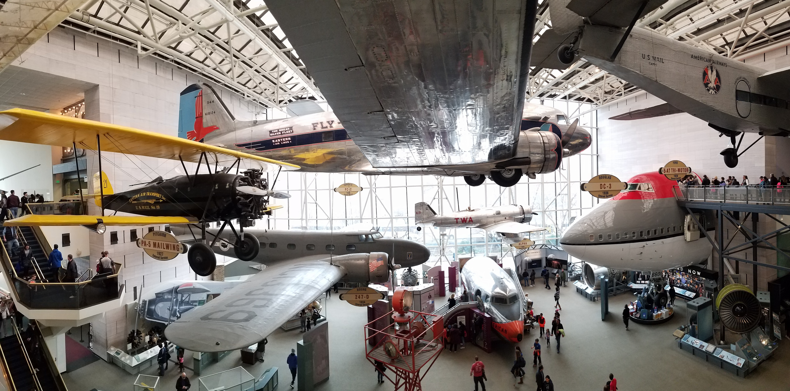

One thing we realized when we arrived is the sheer amount of museums in D.C. Just the Smithsonian consists of around a dozen museums, each one containing about a day's worth of exhibits to explore. Just outside the National Mall there are various other museums such as the Newseum, Holocaust Memorial Museum and various others. Some require entry fees (typically around $24) or at least tickets, particularly during Spring Break due to the large crowds attending. However, they are well worth the wait. Monday morning we picked the National Air and Space Museum during the morning leaving the National Museum of Natural Sciences for the afternoon. Of course the museum was packed with school children scrambling around in awe of the grand ships. We weren't much different from them. From the Hidenberg to replicas of Voyager, we kept ourselves busy for at least 3 hours if not more. We then headed out to the National Museum of Natural Sciences.
|
 |
|
African Elephant greeting visitors at the entrance
|
|
|
The following day we woke up earlier to check out the Lincoln Memorial and Washington Monument. Although it was much sunnier than Monday, it turned out to be much windier. Bracing ourselves, we headed to the Lincoln Memorial before the crowds arrived. The size of the marble platform reminded me of the one at Pyongyang where the leader's statues stand. I much preferred the sights of Washington DC though. As we walked towards the Washington Monument we stumbled across the World War II Memorial. Pillars represented each state and territory of the U.S. during WW2 while a dried up pool stood in the center. When we arrived to the Washington Monument we found out it was closed due to repairs on the elevator. It probably had to do with Spiderman rescuing his classmates from the falling elevator.
Yes, you Spiderman.
Panoramic of Lincoln Memorial
Lincoln sitting on his chair
On Wednesday we arrived early to Ford's Theatre to buy tickets. We originally planned on attending the first tour group and checking out the National Archives afterwards but as it turned out it was fully booked. Instead we bought tickets for the second group at 9:30. It was a short experience, not taking longer than an hour checking out the exhibits. From there we passed by the National Archives to check out how long the line was. It was extremely long, so we skipped it and headed towards the White House. Even though we were denied entry due to the number of people going in, we still got to walk around this iconic building. Since the National Holocaust museum was close by we headed out to it. We realized by the time we arrived tickets for the day had run out so we would only be able to explore the special exhibit instead of the permanent one. Still a good experience since the exhibit showcased replicas of a kid's experiences recovered from his journal and letters. It walked us from his home when he was living quite happily to the streets when people began singling his family out due to being Jewish to the concentration camp he wound up in. I spent some time afterwards reflecting on his experiences. Afterwards we toured the Marthin Luther King Memorial, Franklin D. Roosevelt Memorial, and Jefferson Memorial. The FDR memorial turned out to be quite intersting. Instead of being grand like the other ones, it consisted of several statues of FDR, his pet dog, Eleanor Roosevelt, and the people who were affected during the Great Depression. The walls contained various quotes from FDR and his wife which one could see as they walk around. Wednesday was much more about touring the outside attractions than exploring museums.

|
|
|
Thursday was the big day. The day we got to explore the U.S. Capitol building. Fortunately for us, we did get accepted into the tour group which began at 9 in the morning. Our guide was an intern from college working for Representative John Cornyn. We met up at the office buildings in front of the Capitol from which we were escorted underground through a labyrinth of hallways. We took a short subway ride to arrive beneath the Capitol. From the visitor's center there was a small showcase of how the Capitol looked like through the years. From there we toured various rooms such as the old Supreme Court, the old Congressional Chamber, and a lobby filled with paintings including a panoramic one wrapping around the entire dome depicting various events in U.S. history. The tour wasn't as intersting as the tour of the Texas Capitol but perhaps it's due to everything being larger in Texas. A short walk later we wound up at the Library of Congress. For some reason it seemed much smaller than I expected. We weren't able to go into the actual library but we did walk around the exhibits most of them about colonial and pre-colonial history. The most interesting one was Jefferson's personal library which still contained various original books.
This was our last day in DC and we wanted to make the most of it. Since we had time for one more museum we opted for the Newseum. One of the more interesting museums, it covers how the press evolved from its origins in the printing press to modern times. Among the exhibits were the 1st amendment, newspapers around the globe, news from dangerous areas and fallen reporters, the evolution of broadcast media, and 9/11. I liked how similar the Newseum is to the Miraikan Museum in Tokyo. Yes, it does provide a lot of info but more than that it piques your interest by posing questions on the situations or objects being showcased. What was your experience of 9/11? How would you get info in a state in which the medai isn't free? Do some amendments trump others? Among the exhibits was one that showed how free the press is in each country and why it is considered so. Yet other exhibits allowed you to pose as reporters in various situations. This was definitely one of the more fun museums. Alas, Friday came and so our tour of DC ended. However, before heading back we decided to explore one more museum a short drive away: The Steven F. Udvar-Hazy Center, an extension of the Smithsonian Air and Space Museum which houses dozens of aircrafts from models of the first airplanes to spacecraft and modern military planes. Although we arrived quite early so we could also take off early we wound up spending nearly the whole day in there.

The bomber that dropped the atomic bomb on Hiroshima
If you want to see the album for this trip click here or simply go to my travel page. This will be my last trip until the summer when I'll be moving to Berlin. I should be updating the blog more often since work has eased up a bit. Meanwhile feel free to explore my albums!